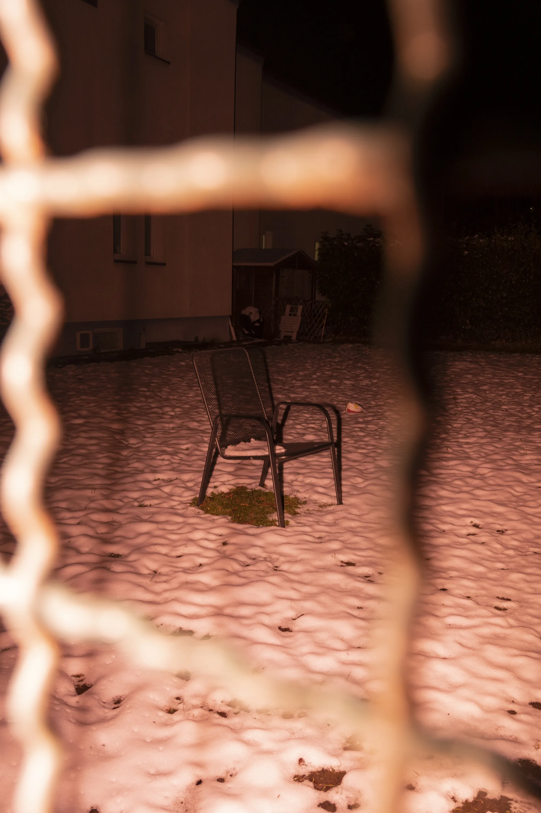
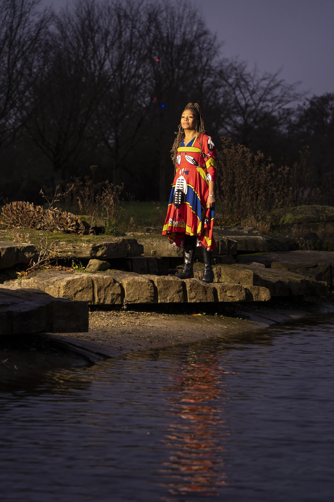
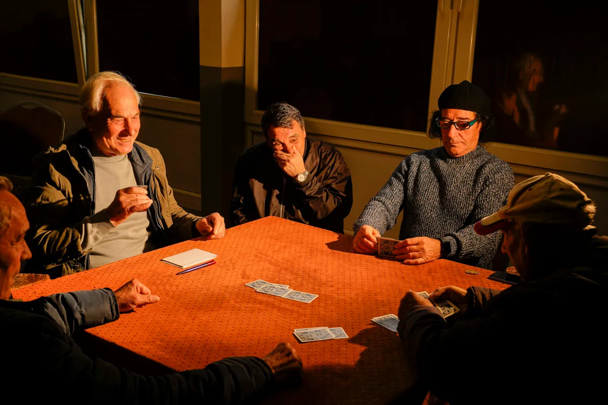
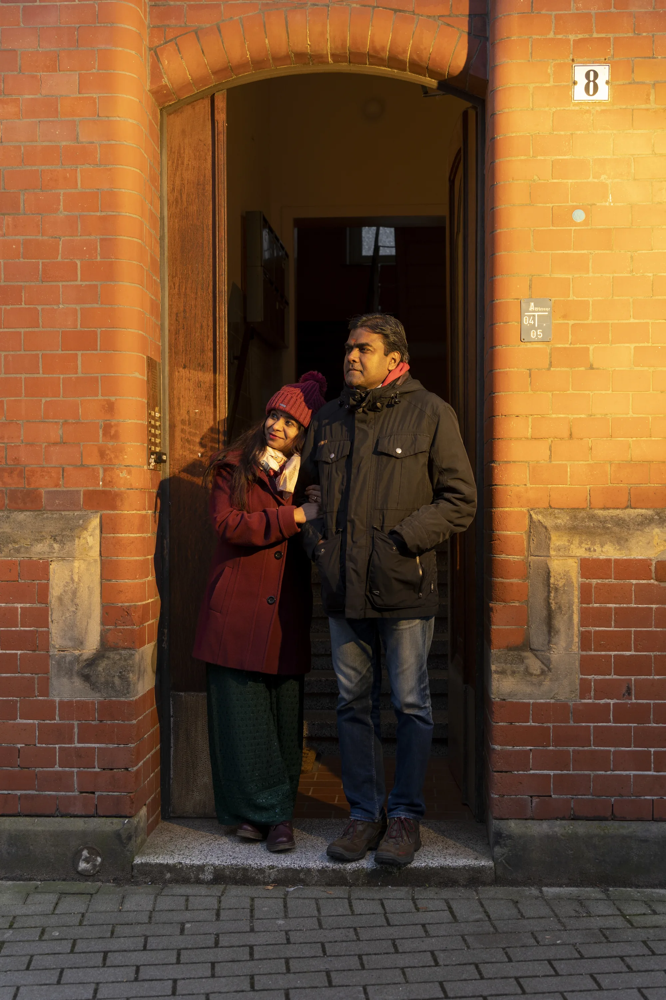
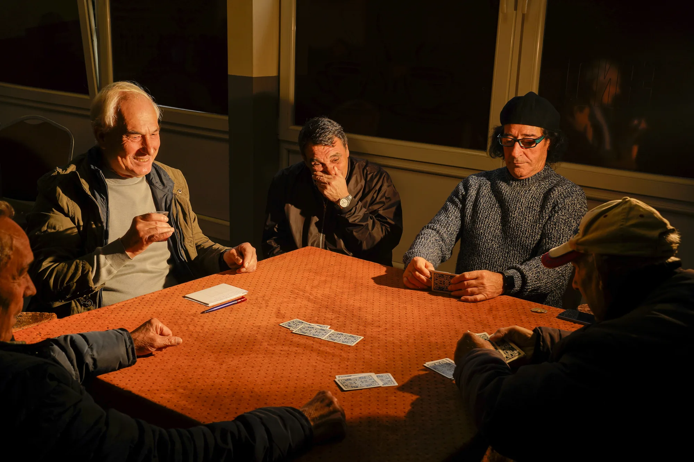
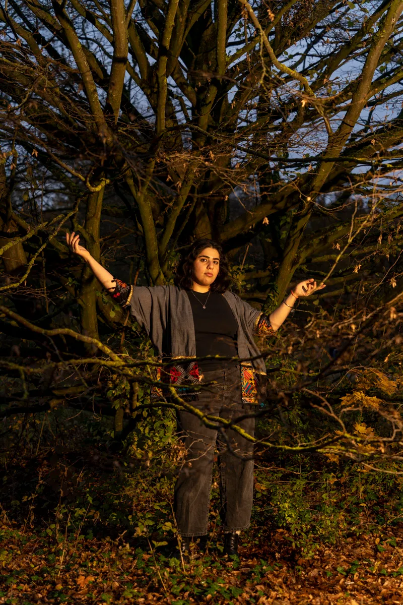
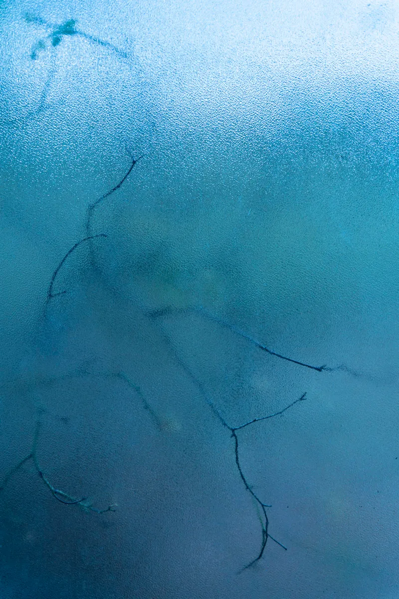
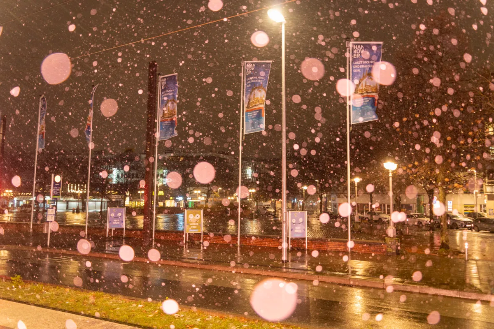

we'll go back to our roots when we reach the sky

This book explores the journey of individuals from the Global South migrating to Germany. Their story dives into the complexities of seeking home in a foreign land, sparking reflections on hope, loss and memory. The very act of leaving is a transformative pilgrimage, a metamorphosis that extends far beyond the mere act of arrival. The narratives traverse identity, community, and individual agency, revealing a poignant exploration of relinquishment and inner resilience. In a world defined by power imbalances and the rigid imaginary boundaries that separate us, these people carve a path towards a life despite the challenges. Their struggles reveal the inherent inequities ingrained in our global world, underscoring the human desire and decision to leave a place one calls home and to traverse borders. My reflections, shaped by my experiences as an exchange student in Germany, intertwine with these narratives. It encapsulates a personal and collective voyage for a world where rights are fundamental components of a just society. The courage displayed by these individuals attests to the belief that such rights are essential threads in our shared humanity, transcending imaginary borders.







